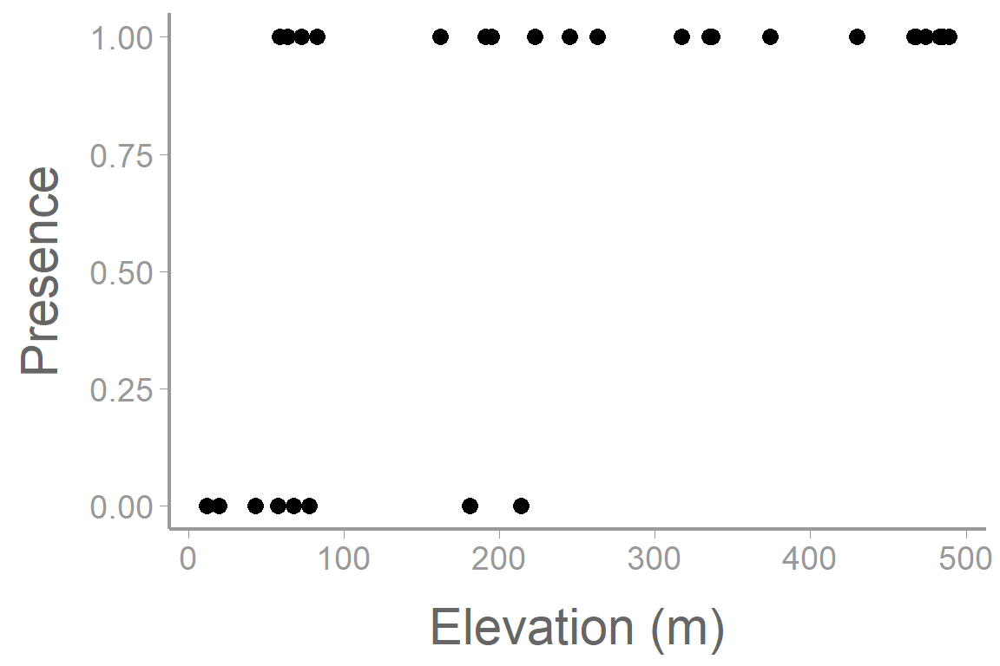
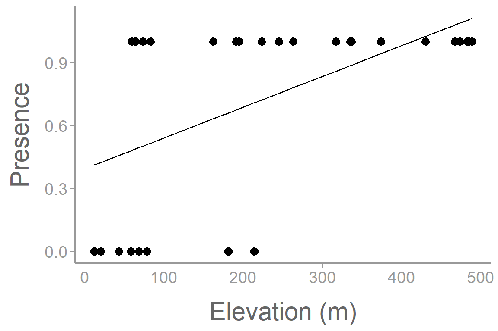
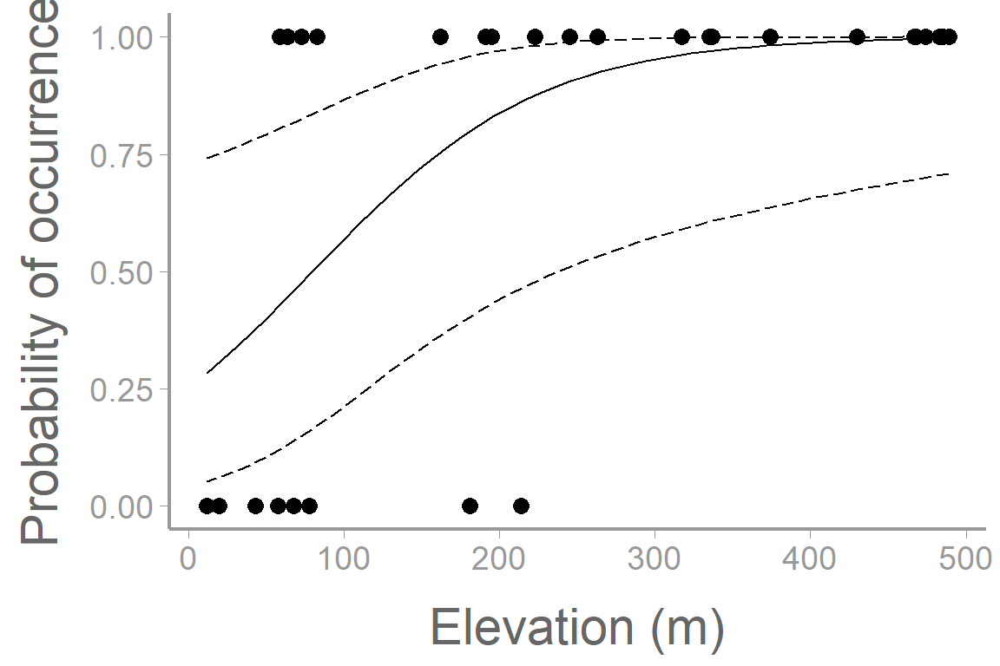
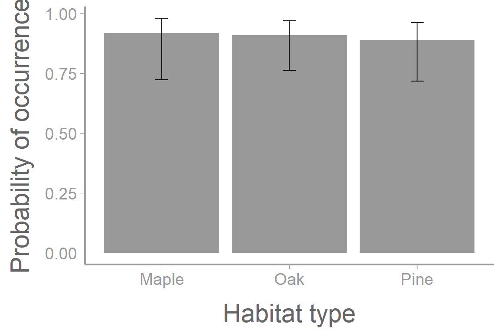

library(FANR6750)
data("orchiddata")
head(orchiddata)
#> presence abundance elevation habitat
#> 1 0 0 58 Oak
#> 2 1 7 191 Oak
#> 3 0 0 43 Oak
#> 4 1 11 374 Oak
#> 5 1 11 337 Oak
#> 6 1 1 64 OakLab 12: Generalized linear models: Logistic Regression
FANR 6750: Experimental Methods in Forestry and Natural Resources Research
Fall 2026
Lab 11
Split Plot
The additive model
Using aov() and lme()
Exploring interactions
Multiple comparisons
Today’s topics
Logistic Regression
Link functions
Using glm()
Creating plots
Generalized Linear Models
Remember from lecture that generalized linear models (GLMs) are useful when the response variable and predictor variables do not have an underlying linear relationship. In this situation, instead of modeling the response as a function of the predictors we can instead model a function of the response (known as the link function) as a function of the predictors. This method has many benefits including:
The residuals don’t have to be normally distributed
The response variable can be binary, integer, strictly-positive, etc…
The variance is not assumed to be constant
Logistic regression
One situation where a generalized linear model is useful is when we are attempting to model a binary response variable. In this case, the only values that our response can take on are coded as a 0 or a 1 (which takes on which value is up to the researcher for easier interpretation).
What are some examples?
- Presence/Absence
- Survived/Died
- Male/Female
- Diseased/Healthy
- Breeding/Nonbreeding
- Migration/Nonmigration
- Extinction/Nonextinction
Let’s take a look at a data example that demonstrates this concept.
Example: Orchid data
| presence | abundance | elevation | habitat |
|---|---|---|---|
| 0 | 0 | 58 | Oak |
| 1 | 7 | 191 | Oak |
| 0 | 0 | 43 | Oak |
| 1 | 11 | 374 | Oak |
| 1 | 11 | 337 | Oak |
| 1 | 1 | 64 | Oak |
First, lets visualize our data.
library(ggplot2)
ggplot() +
geom_point(data = orchiddata, aes(x = elevation, y = presence)) +
scale_y_continuous("Presence") +
scale_x_continuous("Elevation (m)")
Here we are interested in estimating presence. We could start by constructing a model that estimates presence as a function of elevation.
mod1 <- lm(presence~ elevation, data= orchiddata)
summary(mod1)
#>
#> Call:
#> lm(formula = presence ~ elevation, data = orchiddata)
#>
#> Residuals:
#> Min 1Q Median 3Q Max
#> -0.7072 -0.3361 0.0176 0.3103 0.5196
#>
#> Coefficients:
#> Estimate Std. Error t value Pr(>|t|)
#> (Intercept) 0.394014 0.121553 3.24 0.0031 **
#> elevation 0.001464 0.000428 3.42 0.0019 **
#> ---
#> Signif. codes: 0 '***' 0.001 '**' 0.01 '*' 0.05 '.' 0.1 ' ' 1
#>
#> Residual standard error: 0.384 on 28 degrees of freedom
#> Multiple R-squared: 0.295, Adjusted R-squared: 0.269
#> F-statistic: 11.7 on 1 and 28 DF, p-value: 0.00194Now let’s add our model predictions to the plot from above.
model_pred <- predict(mod1)
ggplot() +
geom_point(data = orchiddata, aes(x = elevation, y = presence)) +
geom_line(aes(orchiddata$elevation, model_pred)) +
scale_y_continuous("Presence") +
scale_x_continuous("Elevation (m)")
What issues do you see with this plot? Does this look like a reasonable way to model this response variable?
In this case, we are presented with a problem. We have a binary response variable (\(y_i\)) but it makes more sense for us to predict probability (\(p_i\)) rather than the response itself. We could derive an equation that estimates probability as a function of our predictor variables. This is referred to as the logistic function:
\[ p(x) = \frac{1}{1 + e^{-\beta_0 + \beta_1x1 + ... + \beta_zx_z}} \]
Now we’ve run into another problem. What is the issue with this equation in the context of linear modeling?
Instead, we can use a link function (in this case the logit link) to create a linear relationship between the response and the predictors.
Remember from lecture the logistic regression model:
\[\Large logit(p_i) = \beta_0 + \beta_1x_{i1} + \beta_2x_{i2} + · · · + \beta_zx_{iz}\]
\[\Large y_i \sim binomial(N, p_i)\] where:
\(N\) is the number of ‘trials’ (e.g. coin flips)
\(p_i\) is the probability of a success for sample unit \(i\)
\(z\) is the number of predictors in our model
Let’s start by using the glm() function to model the relationship between orchid detections (0 = not detected, 1 = detected), habitat, and elevation:
fm1 <- glm(presence ~ habitat + elevation, family = binomial(link = "logit"), data = orchiddata)
summary(fm1)
#>
#> Call:
#> glm(formula = presence ~ habitat + elevation, family = binomial(link = "logit"),
#> data = orchiddata)
#>
#> Coefficients:
#> Estimate Std. Error z value Pr(>|z|)
#> (Intercept) -0.99598 1.21698 -0.82 0.413
#> habitatOak -0.09678 1.36752 -0.07 0.944
#> habitatPine -0.33722 1.38157 -0.24 0.807
#> elevation 0.01366 0.00601 2.27 0.023 *
#> ---
#> Signif. codes: 0 '***' 0.001 '**' 0.01 '*' 0.05 '.' 0.1 ' ' 1
#>
#> (Dispersion parameter for binomial family taken to be 1)
#>
#> Null deviance: 34.795 on 29 degrees of freedom
#> Residual deviance: 23.132 on 26 degrees of freedom
#> AIC: 31.13
#>
#> Number of Fisher Scoring iterations: 6
model.matrix(fm1)
#> (Intercept) habitatOak habitatPine elevation
#> 1 1 1 0 58
#> 2 1 1 0 191
#> 3 1 1 0 43
#> 4 1 1 0 374
#> 5 1 1 0 337
#> 6 1 1 0 64
#> 7 1 1 0 195
#> 8 1 1 0 263
#> 9 1 1 0 181
#> 10 1 1 0 59
#> 11 1 0 0 489
#> 12 1 0 0 317
#> 13 1 0 0 12
#> 14 1 0 0 245
#> 15 1 0 0 474
#> 16 1 0 0 83
#> 17 1 0 0 467
#> 18 1 0 0 485
#> 19 1 0 0 335
#> 20 1 0 0 20
#> 21 1 0 1 430
#> 22 1 0 1 223
#> 23 1 0 1 68
#> 24 1 0 1 483
#> 25 1 0 1 78
#> 26 1 0 1 214
#> 27 1 0 1 64
#> 28 1 0 1 73
#> 29 1 0 1 162
#> 30 1 0 1 468
#> attr(,"assign")
#> [1] 0 1 1 2
#> attr(,"contrasts")
#> attr(,"contrasts")$habitat
#> [1] "contr.treatment"Notice that we use the family = argument to tell R that this is a logistic (i.e., binomial) glm with a logit link function.
What do the parameter estimates from this model represent, including the intercept? What can we say about the effects of habitat and elevation on the probability of detecting an orchid?
As we have seen previously, we can use predict() to estimate occurrence probability at different combinations of elevation and habitat. For example, how does probability of occurrence differ across elevations in oak habitat:
predData.elev <- data.frame(elevation = seq(min(orchiddata$elevation), max(orchiddata$elevation), length = 50),habitat = "Oak")
head(predData.elev)| elevation | habitat |
|---|---|
| 12.00 | Oak |
| 21.73 | Oak |
| 31.47 | Oak |
| 41.20 | Oak |
| 50.94 | Oak |
| 60.67 | Oak |
By default, the predictions are on the link scale so to get confidence intervals on the probability scale, we have to back transform using the inverse-link (plogis()):
pred.link <- predict(fm1, newdata = predData.elev, se.fit = TRUE)
predData.elev$p <- plogis(pred.link$fit) # back transform to probability scale
predData.elev$lower <- plogis(pred.link$fit - 1.96 * pred.link$se.fit)
predData.elev$upper <- plogis(pred.link$fit + 1.96 * pred.link$se.fit)
And now plot the predictions and observations:
ggplot() +
geom_point(data = orchiddata, aes(x = elevation, y = presence)) +
geom_path(data = predData.elev, aes(x = elevation, y = p)) +
geom_ribbon(data = predData.elev, aes(x = elevation, ymin = lower, ymax = upper),
fill = NA, color = "black", linetype = "longdash") +
scale_y_continuous("Probability of occurrence") +
scale_x_continuous("Elevation (m)")
What about occurrence probability in each habitat type at a particular elevation:
predData.hab <- data.frame(habitat = c("Oak", "Maple", "Pine"), elevation = 250)
pred.hab <- predict(fm1, newdata = predData.hab, se.fit = TRUE)
predData.hab$p <- plogis(pred.hab$fit) # back transform to probability scale
predData.hab$lower <- plogis(pred.hab$fit - pred.hab$se.fit)
predData.hab$upper <- plogis(pred.hab$fit + pred.hab$se.fit)
ggplot() +
geom_col(data = predData.hab, aes(x = habitat, y = p), fill = "grey60") +
geom_errorbar(data = predData.hab, aes(x = habitat, ymin = lower, ymax = upper),
width = 0.1) +
scale_y_continuous("Probability of occurrence") +
scale_x_discrete("Habitat type")
Assignment
Researchers want to know how latitude and landscape type influence the probability that American Crows are infected by West Nile Virus. One hundred crows are captured and tested for West Nile Virus in urban and rural landscapes spanning a latitude gradient.
The data can be loaded using:
library(FANR6750)
data("crowdata")Create an R markdown report to do the following:
Fit a logistic regression model to the crow data to assess the effects of latitude and landscape type (1.5 pt)
Include a well-formatted summary table of the parameter estimates (1.5 pt)
Provide a clear interpretation of the parameter estimates in the text (1.5 pt)
Plot the relationship between infection probability and latitude, for rural and urban landscapes, on the same graph. The graph should include (1.5 pt):
the observed data points (color coded by landscape)
a legend
confidence intervals
You may format the report however you like but it should be well-organized, with relevant headers, plain text, and the elements described above.
As always:
Be sure the output type is set to:
output: html_documentBe sure to include your first and last name in the
authorsectionBe sure to set
echo = TRUEin allRchunks so we can see both your code and the outputSee the R Markdown reference sheet for help with creating
Rchunks, equations, tables, etc.See the “Creating publication-quality graphics” reference sheet for tips on formatting figures
Assignment
Georgia Department of Natural Resources (GADNR) is interested in understanding the relationship between several demographic variables and the likelihood that a deer hunter will reach their annual harvest limit (10 does and 2 bucks). The data collected by GADNR (which can be found in the harvestdata dataset) contains:
Limit: Whether or not the hunter harvested their limit (1- they did; 0- they did not)
Age: Age of hunter
Fam_veh: The number of vehicles owned by the household
Drive_dist: The average drive distance from the hunter’s home to their hunting spot
Sick12: The number of available sick days accumulated by the hunter in the past 12 months
Sick24: The number of available sick days accumulated by the hunter in the past 24 months
Range_hrs: The number of hours spent by the hunter at the shooting range prior to the start of the season
Muzzleloader: Whether or not the hunter participated in the muzzleloader season (1- they did; 0- they did not)
Archery: Whether or not the hunter participated in the archery season (1- they did; 0- they did not)
Utilized: The percent of available days during the hunting season which the hunter utilized
Past_max: Whether or not the hunter has harvested their limit in a past season (1- they did; 0- they did not)
COUNTY: The hunter’s county of residence
You have been tasked with constructing a parsimonious model which can accurately predict whether or not a hunter will harvest their limit. In addition to constructing the model, GADNR would like you to be able to tell them the model accuracy (i.e. what percentage of time did the model correctly assign a 0 or 1).
While there are several ways you may approach this research question, a rough outline is below:
- Explore your dataset
- Check for missing values or typos
- Consider which variables ought to be considered numerical vs factors
- Check for correlation among predictors and consider removing them if necessary (justify your reasons for the removed predictors)
- Split your dataset into a reasonably sized training and testing set.
- Consider using the functions
sample()andsetdiff()
- Consider using the functions
- Use reasonable model selection procedures to construct a parsimonious model using your training data set.
- You may use quadratic effects or interaction terms but you are not required to.
- Test your model using the
predict()function on your test dataset.- At this point, you can get predictions for all of the observations in your test dataset (using the
predict()function) and you will already have the actual observations from that set - Next you can convert your predictions (which are values of probability) to ones and zeros as factors. Consider using the
ifelse()function for this. - Now you can test to see how many values in your predictions dataframe match the corresponding value in your test set.
- At this point, you can get predictions for all of the observations in your test dataset (using the
- Create a short report to GADNR explaining the model that you constructed and your assessment of its accuracy.
- Include in your report at least one figure which shows the relationship between “Limit” and one of the continuous predictor variables.
- Make sure to include model predictions and 95% confidence intervals
- To do this you can set all other variables to either a reference level (if categorical) or to their mean (if continuous)
- Make sure that your figure displays multiple levels of one categorical variable
- At the end of your report, under a header titled “Reflection”, answer the following questions:
On a 1-10 scale, how would you rate your confidence in the topics covered in this lab?
What lingering questions/confusion about these topics do you still have?
You may format the report however you like but it should be well-organized, with relevant headers, plain text, and the elements described above.
A few things to remember when creating the document:
Be sure to include your name in the
authorfield of the headerBe sure the output type is set to:
output: html_documentBe sure to set
echo = TRUEin allRchunks so that all code and output is visible in the knitted documentRegularly knit the document as you work to check for errors
See the R Markdown reference sheet for help with creating
Rchunks, equations, tables, etc.If you use AI on any part of your assignment, you must include the full prompt(s) you used and it’s full answer(s) in a separate section titled “AI assistance” at the end of this document.